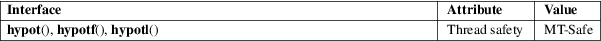

hypot, hypotf, hypotl − Euclidean distance function
Math library (libm, −lm)
#include <math.h>
double
hypot(double x, double y);
float hypotf(float x, float y);
long double hypotl(long double x, long
double y);
Feature Test Macro Requirements for glibc (see feature_test_macros(7)):
hypot():
_ISOC99_SOURCE || _POSIX_C_SOURCE >= 200112L
|| _XOPEN_SOURCE
|| /* Since glibc 2.19: */ _DEFAULT_SOURCE
|| /* glibc <= 2.19: */ _BSD_SOURCE || _SVID_SOURCE
hypotf(),
hypotl():
_ISOC99_SOURCE || _POSIX_C_SOURCE >= 200112L
|| /* Since glibc 2.19: */ _DEFAULT_SOURCE
|| /* glibc <= 2.19: */ _BSD_SOURCE || _SVID_SOURCE
These functions return sqrt(x*x+y*y). This is the length of the hypotenuse of a right-angled triangle with sides of length x and y, or the distance of the point (x,y) from the origin.
The calculation is performed without undue overflow or underflow during the intermediate steps of the calculation.
On success, these functions return the length of the hypotenuse of a right-angled triangle with sides of length x and y.
If x or y is an infinity, positive infinity is returned.
If x or y is a NaN, and the other argument is not an infinity, a NaN is returned.
If the result overflows, a range error occurs, and the functions return HUGE_VAL, HUGE_VALF, or HUGE_VALL, respectively.
If both arguments are subnormal, and the result is subnormal, a range error occurs, and the correct result is returned.
See math_error(7) for information on how to determine whether an error has occurred when calling these functions.
The following
errors can occur:
Range error: result overflow
errno is set to ERANGE. An overflow floating-point exception (FE_OVERFLOW) is raised.
Range error: result underflow
An underflow floating-point exception (FE_UNDERFLOW) is raised.
These functions do not set errno for this case.
For an explanation of the terms used in this section, see attributes(7).

C11, POSIX.1-2008.
C99, POSIX.1-2001.
The variant returning double also conforms to SVr4, 4.3BSD.
cabs(3), sqrt(3)